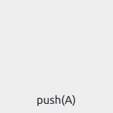
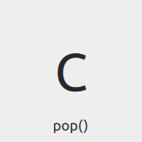
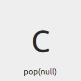
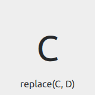
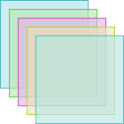

StackView QML Type
Provides a stack-based navigation model. More...
| Import Statement: | import QtQuick.Controls |
| Inherits: |
Properties
- busy : bool
- currentItem : Item
- depth : int
- empty : bool
(since QtQuick.Controls 2.3 (Qt 5.10)) - initialItem : var
- popEnter : Transition
- popExit : Transition
- pushEnter : Transition
- pushExit : Transition
- replaceEnter : Transition
- replaceExit : Transition
Attached Properties
- index : int
- status : enumeration
- view : StackView
- visible : bool
(since QtQuick.Controls 2.2 (Qt 5.9))
Attached Signals
- activated()
(since QtQuick.Controls 2.1 (Qt 5.8)) - activating()
(since QtQuick.Controls 2.1 (Qt 5.8)) - deactivated()
(since QtQuick.Controls 2.1 (Qt 5.8)) - deactivating()
(since QtQuick.Controls 2.1 (Qt 5.8)) - removed()
(since QtQuick.Controls 2.1 (Qt 5.8))
Methods
- void clear(transition)
- Item find(callback, behavior)
- Item get(index, behavior)
- Item pop(item, operation)
- Item popCurrentItem(operation)
(since 6.7) - Item popToIndex(index, operation)
(since 6.7) - Item popToItem(item, operation)
(since 6.7) - Item push(item, properties, operation)
- Item pushItem(item, properties, operation)
(since 6.7) - Item pushItem(component, properties, operation)
(since 6.7) - Item pushItem(url, properties, operation)
(since 6.7) - Item pushItems(items, operation)
(since 6.7) - Item replace(target, item, properties, operation)
- Item replaceCurrentItem(items, operation)
(since 6.7) - Item replaceCurrentItem(item, properties, operation)
(since 6.7) - Item replaceCurrentItem(component, properties, operation)
(since 6.7) - Item replaceCurrentItem(url, properties, operation)
(since 6.7)
Detailed Description

StackView can be used with a set of inter-linked information pages. For example, an email application with separate views to list the latest emails, view a specific email, and list/view the attachments. The email list view is pushed onto the stack as users open an email, and popped out as they choose to go back.
The following snippet demonstrates a simple use case, where the mainView is pushed onto and popped out of the stack on relevant button click:
ApplicationWindow { title: qsTr("Hello World") width: 640 height: 480 visible: true StackView { id: stack initialItem: mainView anchors.fill: parent } Component { id: mainView Row { spacing: 10 Button { text: "Push" onClicked: stack.push(mainView) } Button { text: "Pop" enabled: stack.depth > 1 onClicked: stack.pop() } Text { text: stack.depth } } } }
Using StackView in an Application
Using StackView in an application is as simple as adding it as a child to a Window. The stack is usually anchored to the edges of the window, except at the top or bottom where it might be anchored to a status bar, or some other similar UI component. The stack can then be used by invoking its navigation methods. The first item to show in the StackView is the one that was assigned to initialItem, or the topmost item if initialItem is not set.
Basic Navigation
StackView supports three primary navigation operations: push(), pop(), and replace(). These correspond to classic stack operations where "push" adds an item to the top of a stack, "pop" removes the top item from the stack, and "replace" is like a pop followed by a push, which replaces the topmost item with the new item. The topmost item in the stack corresponds to the one that is currently visible on screen. Logically, "push" navigates forward or deeper into the application UI, "pop" navigates backward, and "replace" replaces the currentItem.
Pushing Items
In the following animation, three Label controls are pushed onto a stack view with the push() function:

The stack now contains the following items: [A, B, C].
Note: When the stack is empty, a push() operation will not have a transition animation because there is nothing to transition from (typically on application start-up).
Popping Items
Continuing on from the example above, the topmost item on the stack is removed with a call to pop():

The stack now contains the following items: [A, B].
Note: A pop() operation on a stack with depth 1 or 0 does nothing. In such cases, the stack can be emptied using the clear() method.
Unwinding Items via Pop
Sometimes, it is necessary to go back more than a single step in the stack. For example, to return to a "main" item or some kind of section item in the application. In such cases, it is possible to specify an item as a parameter for pop(). This is called an "unwind" operation, where the stack unwinds till the specified item. If the item is not found, stack unwinds until it is left with one item, which becomes the currentItem. To explicitly unwind to the bottom of the stack, it is recommended to use pop(null), although any non-existent item will do.
In the following animation, we unwind the stack to the first item by calling pop(null):

The stack now contains a single item: [A].
Replacing Items
In the following animation, we replace the topmost item with D:

The stack now contains the following items: [A, B, D].
Deep Linking
Deep linking means launching an application into a particular state. For example, a newspaper application could be launched into showing a particular article, bypassing the topmost item. In terms of StackView, deep linking means the ability to modify the state of the stack, so much so that it is possible to push a set of items to the top of the stack, or to completely reset the stack to a given state.
The API for deep linking in StackView is the same as for basic navigation. Pushing an array instead of a single item adds all the items in that array to the stack. The transition animation, however, is applied only for the last item in the array. The normal semantics of push() apply for deep linking, that is, it adds whatever is pushed onto the stack.
Note: Only the last item of the array is loaded. The rest of the items are loaded only when needed, either on subsequent calls to pop or on request to get an item using get().
This gives us the following result, given the stack [A, B, C]:
- push([D, E, F]) => [A, B, C, D, E, F] - "push" transition animation between C and F
- replace([D, E, F]) => [A, B, D, E, F] - "replace" transition animation between C and F
- clear() followed by push([D, E, F]) => [D, E, F] - no transition animation for pushing items as the stack was empty.
Finding Items
An Item for which the application does not have a reference can be found by calling find(). The method needs a callback function, which is invoked for each item in the stack (starting at the top) until a match is found. If the callback returns true, find() stops and returns the matching item, otherwise null is returned.
The code below searches the stack for an item named "order_id" and unwinds to that item.
stackView.pop(stackView.find(function(item) {
return item.name == "order_id";
}));
You can also get to an item in the stack using get(index).
previousItem = stackView.get(myItem.StackView.index - 1));
Transitions
For each push or pop operation, different transition animations are applied to entering and exiting items. These animations define how the entering item should animate in, and the exiting item should animate out. The animations can be customized by assigning different Transitions for the pushEnter, pushExit, popEnter, popExit, replaceEnter, and replaceExit properties of StackView.
Note: The transition animations affect each others' transitional behavior. Customizing the animation for one and leaving the other may give unexpected results.
The following snippet defines a simple fade transition for push and pop operations:
StackView { id: stackview anchors.fill: parent pushEnter: Transition { PropertyAnimation { property: "opacity" from: 0 to:1 duration: 200 } } pushExit: Transition { PropertyAnimation { property: "opacity" from: 1 to:0 duration: 200 } } popEnter: Transition { PropertyAnimation { property: "opacity" from: 0 to:1 duration: 200 } } popExit: Transition { PropertyAnimation { property: "opacity" from: 1 to:0 duration: 200 } } }
Note: Using anchors on the items added to a StackView is not supported. Typically push, pop, and replace transitions animate the position, which is not possible when anchors are applied. Notice that this only applies to the root of the item. Using anchors for its children works as expected.
Item Ownership
StackView only takes ownership of items that it creates itself. This means that any item pushed onto a StackView will never be destroyed by the StackView; only items that StackView creates from Components or URLs are destroyed by the StackView. To illustrate this, the messages in the example below will only be printed when the StackView is destroyed, not when the items are popped off the stack:
Component {
id: itemComponent
Item {
Component.onDestruction: print("Destroying second item")
}
}
StackView {
initialItem: Item {
Component.onDestruction: print("Destroying initial item")
}
Component.onCompleted: push(itemComponent.createObject(window))
}
However, both of the items created from the URL and Component in the following example will be destroyed by the StackView when they are popped off of it:
Component {
id: itemComponent
Item {
Component.onDestruction: print("Destroying second item")
}
}
StackView {
initialItem: "Item1.qml"
Component.onCompleted: push(itemComponent)
}
Size
StackView does not inherit an implicit size from items that are pushed onto it. This means that using it as the contentItem of a Dialog, for example, will not work as expected:
Dialog { StackView { initialItem: Rectangle { width: 200 height: 200 color: "salmon" } } }
There are several ways to ensure that StackView has a size in this situation:
- Set implicitWidth and implicitHeight on the StackView itself.
- Set implicitWidth and implicitHeight on the Rectangle.
- Set contentWidth and contentHeight on the Dialog.
- Give the Dialog a size.
See also Customizing StackView, Navigating with StackView, Navigation Controls, Container Controls, and Focus Management in Qt Quick Controls.
Property Documentation
busy : bool |
This property holds whether a transition is running.
currentItem : Item |
This property holds the current top-most item in the stack.
depth : int |
This property holds the number of items currently pushed onto the stack.
empty : bool |
This property holds whether the stack is empty.
This property was introduced in QtQuick.Controls 2.3 (Qt 5.10).
See also depth.
initialItem : var |
popEnter : Transition |
This property holds the transition that is applied to the item that enters the stack when another item is popped off of it.
See also Customizing StackView.
popExit : Transition |
This property holds the transition that is applied to the item that exits the stack when the item is popped off of it.
See also Customizing StackView.
pushEnter : Transition |
This property holds the transition that is applied to the item that enters the stack when the item is pushed onto it.
See also Customizing StackView.
pushExit : Transition |
This property holds the transition that is applied to the item that exits the stack when another item is pushed onto it.
See also Customizing StackView.
replaceEnter : Transition |
This property holds the transition that is applied to the item that enters the stack when another item is replaced by it.
See also Customizing StackView.
replaceExit : Transition |
This property holds the transition that is applied to the item that exits the stack when it is replaced by another item.
See also Customizing StackView.
Attached Property Documentation
StackView.index : int |
This attached property holds the stack index of the item it's attached to, or -1 if the item is not in a stack.
StackView.status : enumeration |
This attached property holds the stack status of the item it's attached to, or StackView.Inactive if the item is not in a stack.
Available values:
| Constant | Description |
|---|---|
StackView.Inactive | The item is inactive (or not in a stack). |
StackView.Deactivating | The item is being deactivated (popped off). |
StackView.Activating | The item is being activated (becoming the current item). |
StackView.Active | The item is active, that is, the current item. |
StackView.view : StackView |
This attached property holds the stack view of the item it's attached to, or null if the item is not in a stack.
StackView.visible : bool |
This attached property holds the visibility of the item it's attached to. The value follows the value of Item::visible.
By default, StackView shows incoming items when the enter transition begins, and hides outgoing items when the exit transition ends. Setting this property explicitly allows the default behavior to be overridden, making it possible to keep items that are below the top-most item visible.
Note: The default transitions of most styles slide outgoing items outside the view, and may also animate their opacity. In order to keep a full stack of items visible, consider customizing the transitions so that the items underneath can be seen.

StackView { id: stackView property real offset: 10 width: 100; height: 100 initialItem: Component { id: page Rectangle { property real pos: StackView.index * stackView.offset property real hue: Math.random() color: Qt.hsla(hue, 0.5, 0.8, 0.6) border.color: Qt.hsla(hue, 0.5, 0.5, 0.9) StackView.visible: true } } pushEnter: Transition { id: pushEnter ParallelAnimation { PropertyAction { property: "x"; value: pushEnter.ViewTransition.item.pos } NumberAnimation { properties: "y"; from: pushEnter.ViewTransition.item.pos + stackView.offset; to: pushEnter.ViewTransition.item.pos; duration: 400; easing.type: Easing.OutCubic } NumberAnimation { property: "opacity"; from: 0; to: 1; duration: 400; easing.type: Easing.OutCubic } } } popExit: Transition { id: popExit ParallelAnimation { PropertyAction { property: "x"; value: popExit.ViewTransition.item.pos } NumberAnimation { properties: "y"; from: popExit.ViewTransition.item.pos; to: popExit.ViewTransition.item.pos + stackView.offset; duration: 400; easing.type: Easing.OutCubic } NumberAnimation { property: "opacity"; from: 1; to: 0; duration: 400; easing.type: Easing.OutCubic } } } pushExit: Transition { id: pushExit PropertyAction { property: "x"; value: pushExit.ViewTransition.item.pos } PropertyAction { property: "y"; value: pushExit.ViewTransition.item.pos } } popEnter: Transition { id: popEnter PropertyAction { property: "x"; value: popEnter.ViewTransition.item.pos } PropertyAction { property: "y"; value: popEnter.ViewTransition.item.pos } } }
This property was introduced in QtQuick.Controls 2.2 (Qt 5.9).
Attached Signal Documentation
|
This attached signal is emitted when the item it's attached to is activated in the stack.
Note: The corresponding handler is onActivated.
This signal was introduced in QtQuick.Controls 2.1 (Qt 5.8).
See also status.
|
This attached signal is emitted when the item it's attached to is in the process of being activated in the stack.
Note: The corresponding handler is onActivating.
This signal was introduced in QtQuick.Controls 2.1 (Qt 5.8).
See also status.
|
This attached signal is emitted when the item it's attached to is deactivated in the stack.
Note: The corresponding handler is onDeactivated.
This signal was introduced in QtQuick.Controls 2.1 (Qt 5.8).
See also status.
|
This attached signal is emitted when the item it's attached to is in the process of being dectivated in the stack.
Note: The corresponding handler is onDeactivating.
This signal was introduced in QtQuick.Controls 2.1 (Qt 5.8).
See also status.
|
This attached signal is emitted when the item it's attached to has been removed from the stack. It can be used to safely destroy an Item that was pushed onto the stack, for example:
Item { StackView.onRemoved: destroy() // Will be destroyed sometime after this call. }
Note: The corresponding handler is onRemoved.
This signal was introduced in QtQuick.Controls 2.1 (Qt 5.8).
See also status.
Method Documentation
void clear(transition) |
Removes all items from the stack.
Only items that StackView created itself (from a Component or url) will be destroyed when popped. See Item Ownership for more information.
Since QtQuick.Controls 2.3, a transition can be optionally specified. Supported transitions:
| Constant | Description |
|---|---|
StackView.Immediate | Clear the stack immediately without any transition (default). |
StackView.PushTransition | Clear the stack with a push transition. |
StackView.ReplaceTransition | Clear the stack with a replace transition. |
StackView.PopTransition | Clear the stack with a pop transition. |
Item find(callback, behavior) |
Search for a specific item inside the stack. The callback function is called for each item in the stack (with the item and index as arguments) until the callback function returns true. The return value is the item found. For example:
stackView.find(function(item, index) { return item.isTheOne })
Supported behavior values:
| Constant | Description |
|---|---|
StackView.DontLoad | Unloaded items are skipped (the callback function is not called for them). |
StackView.ForceLoad | Unloaded items are forced to load. |
Item get(index, behavior) |
Returns the item at position index in the stack, or null if the index is out of bounds.
Supported behavior values:
| Constant | Description |
|---|---|
StackView.DontLoad | The item is not forced to load (and null is returned if not yet loaded). |
StackView.ForceLoad | The item is forced to load. |
Item pop(item, operation) |
Pops one or more items off the stack. Returns the last item removed from the stack.
If the item argument is specified, all items down to (but not including) item will be popped. If item is null, all items down to (but not including) the first item is popped. If not specified, only the current item is popped.
Note: A pop() operation on a stack with depth 1 or 0 does nothing. In such cases, the stack can be emptied using the clear() method.
Only items that StackView created itself (from a Component or url) will be destroyed when popped. See Item Ownership for more information.
An operation can be optionally specified as the last argument. Supported operations:
| Constant | Description |
|---|---|
StackView.Immediate | An immediate operation without transitions. |
StackView.PushTransition | An operation with push transitions (since QtQuick.Controls 2.1). |
StackView.ReplaceTransition | An operation with replace transitions (since QtQuick.Controls 2.1). |
StackView.PopTransition | An operation with pop transitions (since QtQuick.Controls 2.1). |
If no operation is provided, PopTransition will be used.
Examples:
stackView.pop() stackView.pop(someItem, StackView.Immediate) stackView.pop(StackView.Immediate) stackView.pop(null)
Note: If you are compiling QML, use the strongly-typed popToItem, popToIndex or popCurrentItem functions instead.
See also clear(), Popping Items, and Unwinding Items via Pop.
|
Pops currentItem from the stack. Returns the last item removed from the stack, or null if depth was 1.
Only items that StackView created itself (from a Component or url) will be destroyed when popped. See Item Ownership for more information.
An operation can be optionally specified as the last argument. Supported operations:
| Constant | Description |
|---|---|
StackView.Immediate | An immediate operation without transitions. |
StackView.PushTransition | An operation with push transitions. |
StackView.ReplaceTransition | An operation with replace transitions. |
StackView.PopTransition | An operation with pop transitions. |
If no operation is provided, PopTransition will be used.
This function is equivalent to popToIndex(stackView.currentIndex - 1).
This method was introduced in Qt 6.7.
See also clear(), Popping Items, and Unwinding Items via Pop.
|
Pops all items down to (but not including) index. Returns the last item removed from the stack.
If index is out of bounds, a warning is produced and null is returned.
Only items that StackView created itself (from a Component or url) will be destroyed when popped. See Item Ownership for more information.
An operation can be optionally specified as the last argument. Supported operations:
| Constant | Description |
|---|---|
StackView.Immediate | An immediate operation without transitions. |
StackView.PushTransition | An operation with push transitions. |
StackView.ReplaceTransition | An operation with replace transitions. |
StackView.PopTransition | An operation with pop transitions. |
If no operation is provided, PopTransition will be used.
stackView.popToIndex(stackView.depth - 2, StackView.Immediate)
This method was introduced in Qt 6.7.
See also clear(), Popping Items, and Unwinding Items via Pop.
|
Pops all items down to (but not including) item. Returns the last item removed from the stack.
If item is null, a warning is produced and null is returned.
Only items that StackView created itself (from a Component or url) will be destroyed when popped. See Item Ownership for more information.
An operation can be optionally specified as the last argument. Supported operations:
| Constant | Description |
|---|---|
StackView.Immediate | An immediate operation without transitions. |
StackView.PushTransition | An operation with push transitions. |
StackView.ReplaceTransition | An operation with replace transitions. |
StackView.PopTransition | An operation with pop transitions. |
If no operation is provided, PopTransition will be used.
stackView.popToItem(someItem, StackView.Immediate)
This method was introduced in Qt 6.7.
See also clear(), Popping Items, and Unwinding Items via Pop.
Item push(item, properties, operation) |
Pushes an item onto the stack using an optional operation, and optionally applies a set of properties on the item. The item can be an Item, Component, or a url. Returns the item that became current.
StackView creates an instance automatically if the pushed item is a Component, or a url, and the instance will be destroyed when it is popped off the stack. See Item Ownership for more information.
The optional properties argument specifies a map of initial property values for the pushed item. For dynamically created items, these values are applied before the creation is finalized. This is more efficient than setting property values after creation, particularly where large sets of property values are defined, and also allows property bindings to be set up (using Qt.binding()) before the item is created.
Pushing a single item:
stackView.push(rect) // or with properties: stackView.push(rect, {"color": "red"})
Multiple items can be pushed at the same time either by passing them as additional arguments, or as an array. The last item becomes the current item. Each item can be followed by a set of properties to apply.
Passing a variable amount of arguments:
stackView.push(rect1, rect2, rect3) // or with properties: stackView.push(rect1, {"color": "red"}, rect2, {"color": "green"}, rect3, {"color": "blue"})
Pushing an array of items:
stackView.push([rect1, rect2, rect3]) // or with properties: stackView.push([rect1, {"color": "red"}, rect2, {"color": "green"}, rect3, {"color": "blue"}])
An operation can be optionally specified as the last argument. Supported operations:
| Constant | Description |
|---|---|
StackView.Immediate | An immediate operation without transitions. |
StackView.PushTransition | An operation with push transitions (since QtQuick.Controls 2.1). |
StackView.ReplaceTransition | An operation with replace transitions (since QtQuick.Controls 2.1). |
StackView.PopTransition | An operation with pop transitions (since QtQuick.Controls 2.1). |
If no operation is provided, Immediate will be used if the stack is empty, and PushTransition otherwise.
Note: Items that already exist in the stack are not pushed.
Note: If you are compiling QML, use the strongly-typed pushItem or pushItems functions instead.
See also initialItem and Pushing Items.
|
Pushes an item onto the stack, optionally applying a set of properties, using the optional operation. Returns the item that became current (the last item).
An operation can be optionally specified as the last argument. Supported operations:
| Constant | Description |
|---|---|
StackView.Immediate | An immediate operation without transitions. |
StackView.PushTransition | An operation with push transitions. |
StackView.ReplaceTransition | An operation with replace transitions. |
StackView.PopTransition | An operation with pop transitions. |
If no operation is provided, PushTransition will be used.
To push several items onto the stack, use pushItems().
This method was introduced in Qt 6.7.
See also initialItem and Pushing Items.
|
This function overloads pushItem().
Pushes a component onto the stack, optionally applying a set of properties, using the optional operation. Returns the item that became current (the last item).
An operation can be optionally specified as the last argument. Supported operations:
| Constant | Description |
|---|---|
StackView.Immediate | An immediate operation without transitions. |
StackView.PushTransition | An operation with push transitions. |
StackView.ReplaceTransition | An operation with replace transitions. |
StackView.PopTransition | An operation with pop transitions. |
If no operation is provided, PushTransition will be used.
To push several items onto the stack, use pushItems().
This method was introduced in Qt 6.7.
See also initialItem and Pushing Items.
|
This function overloads pushItem().
Pushes a url onto the stack, optionally applying a set of properties, using the optional operation. Returns the item that became current (the last item).
An operation can be optionally specified as the last argument. Supported operations:
| Constant | Description |
|---|---|
StackView.Immediate | An immediate operation without transitions. |
StackView.PushTransition | An operation with push transitions. |
StackView.ReplaceTransition | An operation with replace transitions. |
StackView.PopTransition | An operation with pop transitions. |
If no operation is provided, PushTransition will be used.
To push several items onto the stack, use pushItems().
This method was introduced in Qt 6.7.
See also initialItem and Pushing Items.
|
Pushes items onto the stack using an optional operation, and optionally applies a set of properties on each element. Each element can be an Item, Component, or url. Returns the item that became current (the last item).
StackView creates an instance automatically if the pushed element is a Component or url, and the instance will be destroyed when it is popped off the stack. See Item Ownership for more information.
The optional properties arguments come after each item, and specify a map of initial property values. For dynamically created items, these values are applied before the creation is finalized. This is more efficient than setting property values after creation, particularly where large sets of property values are defined, and also allows property bindings to be set up (using Qt.binding()) before the item is created.
stackView.push([item, rectComponent, Qt.resolvedUrl("MyItem.qml")]) // With properties: stackView.push([ item, { "color": "red" }, rectComponent, { "color": "green" }, Qt.resolvedUrl("MyItem.qml"), { "color": "blue" } ]) // With properties for only some items: stackView.push([ item, { "color": "yellow" }, rectComponent ])
An operation can be optionally specified as the last argument. Supported operations:
| Constant | Description |
|---|---|
StackView.Immediate | An immediate operation without transitions. |
StackView.PushTransition | An operation with push transitions. |
StackView.ReplaceTransition | An operation with replace transitions. |
StackView.PopTransition | An operation with pop transitions. |
If no operation is provided, PushTransition will be used.
To push a single item, use the relevant pushItem function:
- pushItem(item, properties, operation)
- pushItem(component, properties, operation)
- pushItem(url, properties, operation)
Note: Items that already exist in the stack are not pushed.
This method was introduced in Qt 6.7.
See also initialItem, pushItem, and Pushing Items.
Item replace(target, item, properties, operation) |
Replaces one or more items on the stack with the specified item and optional operation, and optionally applies a set of properties on the item. The item can be an Item, Component, or a url. Returns the item that became current.
Only items that StackView created itself (from a Component or url) will be destroyed when popped. See Item Ownership for more information.
If the target argument is specified, all items down to the target item will be replaced. If target is null, all items in the stack will be replaced. If not specified, only the top item will be replaced.
StackView creates an instance automatically if the replacing item is a Component, or a url. The optional properties argument specifies a map of initial property values for the replacing item. For dynamically created items, these values are applied before the creation is finalized. This is more efficient than setting property values after creation, particularly where large sets of property values are defined, and also allows property bindings to be set up (using Qt.binding()) before the item is created.
Replace the top item:
stackView.replace(rect) // or with properties: stackView.replace(rect, {"color": "red"})
Multiple items can be replaced at the same time either by passing them as additional arguments, or as an array. Each item can be followed by a set of properties to apply.
Passing a variable amount of arguments:
stackView.replace(rect1, rect2, rect3) // or with properties: stackView.replace(rect1, {"color": "red"}, rect2, {"color": "green"}, rect3, {"color": "blue"})
Replacing an array of items:
stackView.replace([rect1, rect2, rect3]) // or with properties: stackView.replace([rect1, {"color": "red"}, rect2, {"color": "green"}, rect3, {"color": "blue"}])
An operation can be optionally specified as the last argument. Supported operations:
| Constant | Description |
|---|---|
StackView.Immediate | An immediate operation without transitions. |
StackView.PushTransition | An operation with push transitions (since QtQuick.Controls 2.1). |
StackView.ReplaceTransition | An operation with replace transitions (since QtQuick.Controls 2.1). |
StackView.PopTransition | An operation with pop transitions (since QtQuick.Controls 2.1). |
If no operation is provided, Immediate will be used if the stack is empty, and ReplaceTransition otherwise.
The following example illustrates the use of push and pop transitions with replace().
StackView { id: stackView initialItem: Component { id: page Page { Row { spacing: 20 anchors.centerIn: parent Button { text: "<" onClicked: stackView.replace(page, StackView.PopTransition) } Button { text: ">" onClicked: stackView.replace(page, StackView.PushTransition) } } } } }
Note: If you are compiling QML, use the strongly-typed replaceCurrentItem functions instead.
See also push() and Replacing Items.
|
Pops currentItem from the stack and pushes items. If the optional operation is specified, the relevant transition will be used. Each item can be followed by an optional set of properties that will be applied to that item. Returns the item that became current.
The optional properties arguments come after each item, and specify a map of initial property values. For dynamically created items, these values are applied before the creation is finalized. This is more efficient than setting property values after creation, particularly where large sets of property values are defined, and also allows property bindings to be set up (using Qt.binding()) before the item is created.
Only items that StackView created itself (from a Component or url) will be destroyed when popped. See Item Ownership for more information.
An operation can be optionally specified as the last argument. Supported operations:
| Constant | Description |
|---|---|
StackView.Immediate | An immediate operation without transitions. |
StackView.PushTransition | An operation with push transitions. |
StackView.ReplaceTransition | An operation with replace transitions. |
StackView.PopTransition | An operation with pop transitions. |
If no operation is provided, ReplaceTransition will be used.
stackView.replaceCurrentItem([item, rectComponent, Qt.resolvedUrl("MyItem.qml")]) // With properties: stackView.replaceCurrentItem([ item, { "color": "red" }, rectComponent, { "color": "green" }, Qt.resolvedUrl("MyItem.qml"), { "color": "blue" } ])
To push a single item, use the relevant overload:
- replaceCurrentItem(item, properties, operation)
- replaceCurrentItem(component, properties, operation)
- replaceCurrentItem(url, properties, operation)
This method was introduced in Qt 6.7.
See also push() and Replacing Items.
|
This function overloads replaceCurrentItem().
Pops currentItem from the stack and pushes item. If the optional operation is specified, the relevant transition will be used. If the optional properties are specified, they will be applied to the item. Returns the item that became current.
Only items that StackView created itself (from a Component or url) will be destroyed when popped. See Item Ownership for more information.
An operation can be optionally specified as the last argument. Supported operations:
| Constant | Description |
|---|---|
StackView.Immediate | An immediate operation without transitions. |
StackView.PushTransition | An operation with push transitions. |
StackView.ReplaceTransition | An operation with replace transitions. |
StackView.PopTransition | An operation with pop transitions. |
If no operation is provided, ReplaceTransition will be used.
To push several items onto the stack, use replaceCurrentItem(items, operation).
This method was introduced in Qt 6.7.
See also Replacing Items.
|
This function overloads replaceCurrentItem().
Pops currentItem from the stack and pushes component. If the optional operation is specified, the relevant transition will be used. If the optional properties are specified, they will be applied to the item. Returns the item that became current.
Only items that StackView created itself (from a Component or url) will be destroyed when popped. See Item Ownership for more information.
An operation can be optionally specified as the last argument. Supported operations:
| Constant | Description |
|---|---|
StackView.Immediate | An immediate operation without transitions. |
StackView.PushTransition | An operation with push transitions. |
StackView.ReplaceTransition | An operation with replace transitions. |
StackView.PopTransition | An operation with pop transitions. |
If no operation is provided, ReplaceTransition will be used.
To push several items onto the stack, use replaceCurrentItem(items, operation).
This method was introduced in Qt 6.7.
See also Replacing Items.
|
This function overloads replaceCurrentItem().
Pops currentItem from the stack and pushes url. If the optional operation is specified, the relevant transition will be used. If the optional properties are specified, they will be applied to the item. Returns the item that became current.
Only items that StackView created itself (from a Component or url) will be destroyed when popped. See Item Ownership for more information.
An operation can be optionally specified as the last argument. Supported operations:
| Constant | Description |
|---|---|
StackView.Immediate | An immediate operation without transitions. |
StackView.PushTransition | An operation with push transitions. |
StackView.ReplaceTransition | An operation with replace transitions. |
StackView.PopTransition | An operation with pop transitions. |
If no operation is provided, ReplaceTransition will be used.
To push several items onto the stack, use replaceCurrentItem(items, operation).
This method was introduced in Qt 6.7.
See also Replacing Items.